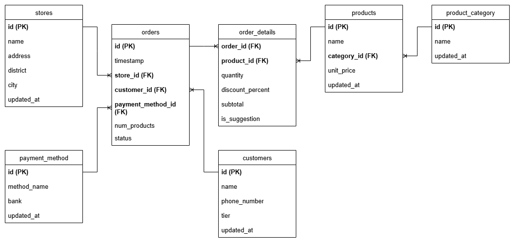

📝 DOCUMENTATION
I. Design
1. Project Overview
This project simulates the data system of a coffee shop chain, focusing on two main objectives:
- Real-time product suggestion based on customer orders
- Daily batch processing to prepare clean and structured data for analytics
The system is designed to support both low-latency business logic and large-scale analytical reporting by real-time and batch workflows.
2. Business Requirements
Real-time Processing — Product Suggestion Logic
When a new order is placed, the system should evaluate whether it qualifies for a product suggestion. The following conditions must be met:
- The payment method is bank transfer, and the bank is ACB
- The customer is a diamond-tier member
- If both conditions are satisfied, the system should suggest a product with a special discount
Batch Processing - Cleaned Data Store
The batch layer handles periodic data processing to prepare it for analytics and reporting. It includes the following stages:
- Ingest: Extract raw data from the source systems into the data lake or staging area
- Clean: Apply transformations to validate, filter, and standardize the data
- Store: Load the processed data into structured storage for further use
3. Data Source
The data is divided into several CSV files and used as follows:
product.csv: A list of products sold in the coffee shop.- id: Unique ID of the product
- name: Name of the product
- category_id: ID of the category this product belongs to
- unit_price: The price of the product
- updated_at: Timestamp of the last update to this product’s data
product_category.csv: The category of the product.- id: Unique ID for each product category
- name: Name of the category
- updated_at: Timestamp of the last update to this category’s data
store.csv: The branches of the coffee shop.- id: Unique ID for each coffee shop location
- name: Name of the coffee shop branch
- address: The address of the coffee shop
- district: The district where the branch is located
- city: The city that the branch is located.
- updated_at: Timestamp of the last update to this store’s data.
payment_method.csv: The payment methods supported by the coffee shop- id: Unique ID for each payment method
- method_name: The name of the payment method (e.g., Cash, Credit Card, etc.)
- bank: Bank associated with the method (used for bank transfer only).
- updated_at: The date when the payment method data was last updated.
diamond_customers.csv: List of diamond-tier customers.- id: TUnique identifier for the customer.
- name: The name of customer.
- phone_number: Customer’s phone number.
- updated_at: Timestamp of the last update to this diamond customer’s data.
orders: This data is generated automatically via a Python script. It includes detailed information about the orders info and loaded into MySQL.- id: Unique ID for each order.
- timestamp: Date and time when the order was placed.
- store_id: The ID of the store where the order took place
- payment_method_id: The payment method used for the order
- customer_id: Customer who orders.
order_details: Auto-generated data representing products in each order (loaded into MySQL)- order_id: Identifier linking to the corresponding order.
- product_id: ID of the purchased product.
- quantity: Quantity of the product purchased.
- discount_percent: Discount applied to this product (used in business logic).
- subtotal: Total price for this product (unit_price × quantity)
- is_suggestion: Indicates whether this product was suggested (used in business logic).
4. Task Flow
{kind=link}
The diagram above outlines the key functional tasks in both real-time and batch layers. It starts from data ingestion and proceeds through cleaning, business logic (e.g., product suggestion), and finally to storage for analytics.
The logic separates cleanly into two flows:
- Real-time: Triggered upon new order events and checks eligibility for product suggestions.
- Batch: Periodically processes historical data for analytical use.
5. Database Design for Landing Data (MySQL)
To simulate a transactional environment, we use MySQL as the landing database to store raw order data. MySQL is chosen for its compatibility with CDC tools (e.g., Kafka Connect), support for ACID transactions, and ease of integration with Python-based data generators.
This layer includes core tables such as orders, order_details, and reference tables like products, stores, payment_methods, etc.,
These tables serve two purposes:
- Act as a source of truth for both real-time and batch pipelines.
- Allow external tools (e.g., Kafka Connect) to listen to changes and push them into the message broker.
The ER diagram below illustrates the relationships between the core tables:

{kind=link}
6. Lakehouse Architecture
In the lakehouse, we structure data using the Medallion Architecture:
- Bronze: raw data ingested from source systems
- Silver: cleaned, transformed and joined data
- Gold: aggregated and business-consumable data for dashboarding and analytics
Data Model in Gold Layer
{kind=link}
Gold Layer Data Catalog
gld.dim_products
Provides information about the products and their attributes.
| Column Name | Data Type | Description |
|---|---|---|
| product_key | int | Surrogate key for the product (unique per version for SCD2 tracking). |
| product_id | string | Natural/business key from the original product source. |
| product_name | string | Name of the product. |
| category | string | Category that the product belongs to. |
| unit_price | int | Price per unit of the product. |
| start_date | date | Date when this version of the product record became valid. |
| end_date | date | Date when this version stopped being valid (null if current). |
| is_current | boolean | Indicates whether this is the current version of the product (true/false). |
gld.dim_stores
Provides information about store locations and their attributes.
| Column Name | Data Type | Description |
|---|---|---|
| store_key | int | Surrogate key for the store (unique per version for SCD2 tracking). |
| store_id | int | Natural/business key from the original store source. |
| address | string | Full address of the store. |
| district | string | District where the store is located. |
| city | string | City where the store is located. |
| start_date | date | Date when this version of the store record became valid. |
| end_date | date | Date when this version stopped being valid (null if current). |
| is_current | boolean | Indicates whether this is the current version of the store (true/false). |
gld.fact_orders
Captures detailed coffee shop order transactions for reporting and analysis.
| Column Name | Data Type | Description |
|---|---|---|
| order_date | date | The date when the order was placed. |
| order_id | string | Unique identifier for each order. |
| customer_id | int | Identifier for the customer who placed the order. |
| store_key | int | Foreign key referencing the store dimension. |
| payment_method_key | int | Foreign key referencing the payment method used. |
| product_key | int | Foreign key referencing the purchased product. |
| quantity | int | Number of units of the product ordered. |
| subtotal | int | Total cost for the product line. |
7. Data Pipeline Design

Stream Processing
Real-time Suggestion Logic
A Kafka Consumer listens to the topic containing order details. It checks the following conditions to determine whether a product suggestion should be made:
- Whether the customer is a diamond-tier member
- Whether the payment method is bank transfer
- Whether the associated bank is ACB
If all conditions are satisfied, the system suggests a product different from those already ordered.
The system assumes the customer always accepts the suggestion. The confirmed suggestion is then published to the topic order_suggestion_accepted.
Caching Strategy for Real-time Processing
Since condition checks are performed continuously in real time, lookup tables are cached in Redis to optimize performance:
- products: List of all available products
- payment_methods: Only ID of method bank transfer and bank name ACB
- diamond_customers: List of all customers with diamond-tier membership
- order_info: Mapping of
order_idtocustomer_idandpayment_method_idfor fast acces
Batch Processing
Data is loaded into the Lakehouse following the Medallion Architecture.
- Incremental Load is applied to optimize data processing.
- Slowly Changing Dimension (SCD Type 2) is implemented for dimension tables to preserve historical changes.
Why Tech Selection
To support both real-time responsiveness and scalable analytics, this project combines various technologies, each chosen for specific reasons:
-
Kafka is adopted due to the event-driven nature of the product suggestion logic, which must react instantly as new orders arrive. Kafka enables this by:
- Supporting Change Data Capture via Kafka Connect for syncing new orders in near real-time.
- Offering parallel processing through partitioned topics, allowing multiple consumers to handle multiple orders in parallel.
-
Redis is used to cache lookup data (e.g., products, diamond-tier customers, payment methods) to reduce excessive access database access and enable fast condition evaluation. This avoids redundant queries and supports low-latency processing at scale.
-
Apache Spark is chosen to build the Lakehouse architecture:
- Handles both structured and semi-structured data.
- Supports efficient storage formats like Parquet, which reduce storage costs via compression and columnar encoding.
- Integrates with Delta format, which adds ACID compliance, time travel, and incremental processing capabilities — all essential for building reliable, maintainable batch pipelines and Slowly Changing Dimensions (SCD Type 2).
-
Airflow is used to orchestrate repetitive batch jobs, removing the need for manual intervention.